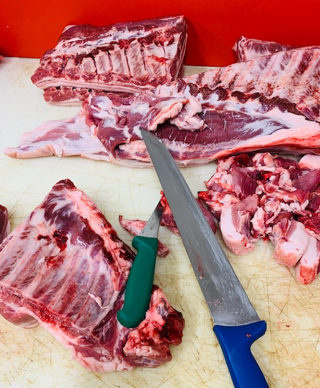
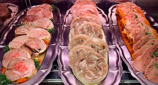
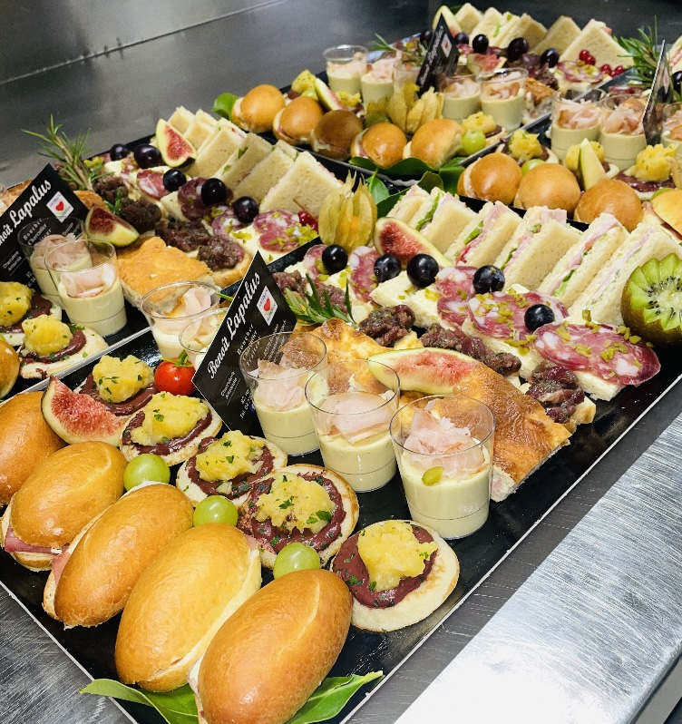
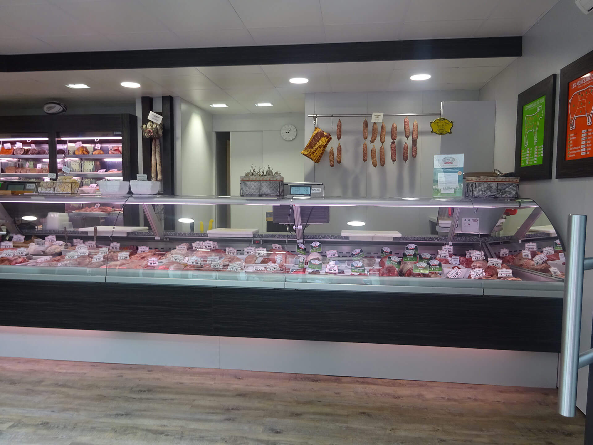
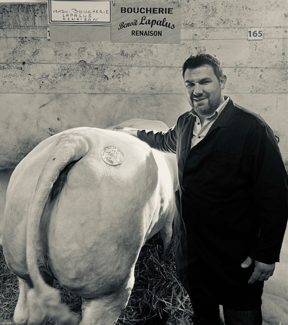
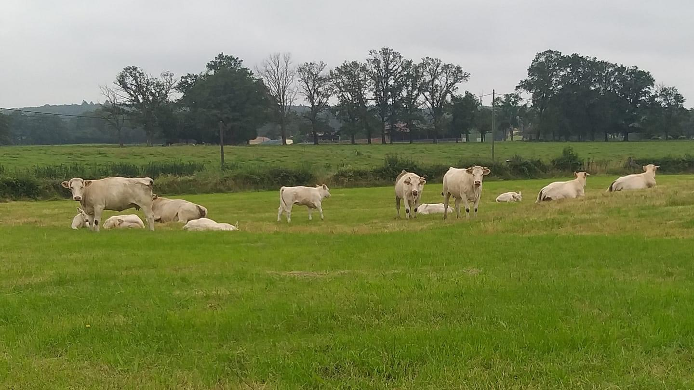
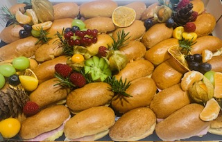
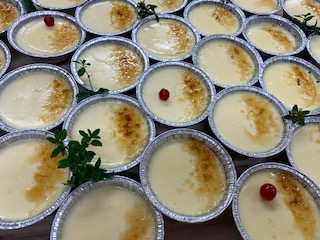
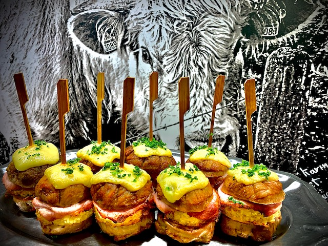

Notre spécialité, le goût !
La Boucherie Lapalus, située à Renaison dans la Loire (42), vous propose une sélection de viandes locales, des charcuteries et plats cuisinés fabriqués de manière artisanale, et des buffets apéritifs ou dînatoires pour vos réceptions.

Viandes locales
Sélectionnées chaque semaine par Benoît dans les fermes de la Côte Roannaise.
Nos fermes →
Charcuterie & plats cuisinés
Saucissons, andouillettes, pâté en croûte, plats d'autrefois… tout est fait maison.
La carte →
Buffets apéritifs
Bouchées, planches et pains surprise pour vos réceptions.
Composer le mien →

Une boucherie familiale à Renaison
Créée en octobre 2008, Benoît et Karine y commencent leur activité avec Anthony, apprenti boucher hors pair ! Entre la viande locale, sélectionnée par Benoît toutes les semaines, et une charcuterie au goût authentique d'autrefois, la maison s'est fait une place sur la Côte Roannaise.
- 2008Ouverture de la boucherie, rue du Commerce.
- 2017Médaille d'Argent au Concours Agricole de Paris pour l'Entrecôte AOP Bœuf de Charolles.
- 2021Un apprenti de la maison participe au concours du Meilleur Apprenti de France.
- 2022Reconnaissance du Gault&Millau, guide régional Auvergne-Rhône-Alpes.
Amateur et ancien joueur de rugby, Benoît est aussi partenaire du Club de l'ASR XV, du RC Saint-Martin-du-Lac, du CRAB, de l'ACF et du tennis.
Le terroir et l'élevage traditionnel d'abord
Benoît se rend toutes les semaines dans les fermes environnantes pour choisir ses bêtes, sélectionnées par l'éleveur et lui-même. Le bien-être animal et la bienveillance des éleveurs donnent une viande de qualité et de goût, tendre naturellement.

Le traiteur, prêt à emporter
Tous les jours, des plats à emporter vous sont proposés. Cherchez un plat ou parcourez la carte par rayon.
Composez votre buffet, on s'occupe du reste
Choisissez le nombre d'invités, la formule et vos bouchées : l'estimation se calcule toute seule, avec les tarifs de notre flyer. Il ne reste qu'à nous appeler ou passer en boutique pour confirmer.
1Combien d'invités ?
2Nos hors d'œuvre
3Vos bouchées au choix
4Nos planches
5En plus



La qualité, contrôlée
Analyses en laboratoire
Depuis plusieurs années, nous faisons intervenir volontairement un laboratoire, plusieurs fois dans l'année, pour des analyses microbiologiques alimentaires sur notre fabrication.
Bœuf de Charolles AOP
Médaille d'Argent au Concours Agricole de Paris en 2017 pour l'Entrecôte AOP Bœuf de Charolles.
Artisan Boucher & Charcuterie artisanale
Saucissons secs et à cuire, andouillettes, pâté en croûte, jambon blanc : fabriqués dans nos laboratoires.
Venir à la boutique
42370 Renaison
Horaires d'ouverture
| Lundi | 6h30 – 12h30 / 15h – 19h |
| Mardi | 6h30 – 12h30 / 15h – 19h |
| Mercredi | Fermé |
| Jeudi | 6h30 – 12h30 / 15h – 19h |
| Vendredi | 6h30 – 12h30 / 15h – 19h |
| Samedi | 6h30 – 12h30 / 15h – 19h |
| Dimanche | Fermé |
| Jours fériés | 7h – 12h |